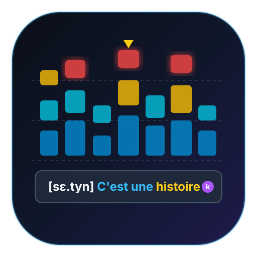

00:00.000
D.s câu (0)

Bộ phân tích hợp âm trực quan qua Constant-Q Transform & Chromagram 12 nốt triệt tiêu bồi âm. Giúp bạn nhìn rõ nốt cấu thành hợp âm để vẽ lại MIDI trong DAW.
Hoặc kéo thả file trực tiếp vào khung này (Hỗ trợ MP3, WAV, AAC, M4A, FLAC, OGG, MP4)